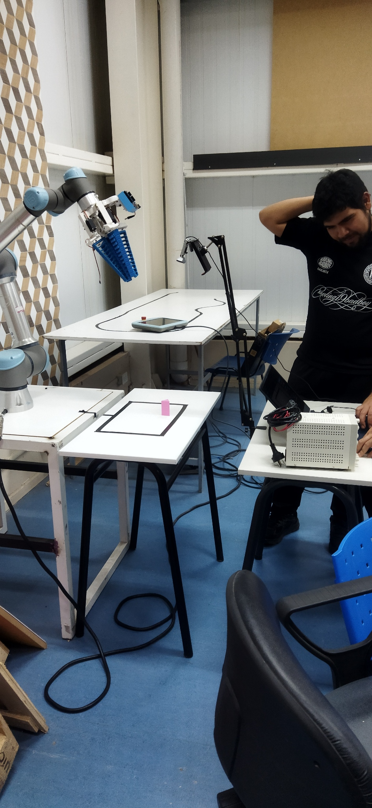
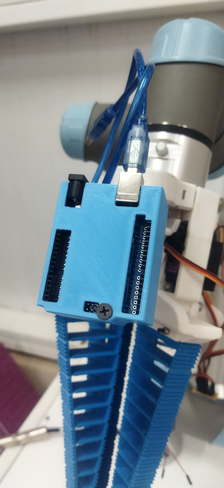

UPrO · Robótica con Orientación IA · Desafío 2 — Alfredo Becerra · Claudio Flores · Lucio Vita
Pick & place guiado por visión artificial
¿Puede un robot industrial encontrar una pieza, recogerla y clasificarla sin conocer previamente su posición exacta? Nuestra respuesta es sí: un UR5 con cámara cenital, OpenCV y un gripper de 4 servos diseñado e impreso por nosotros.

El ciclo, paso a paso
Una sola pieza por ciclo, en posición variable dentro de la zona delimitada. El operario solo coloca la pieza y arranca desde el dashboard: nunca ingresa coordenadas.
-
1.0
Captura
La cámara USB, montada cenital y fija sobre la mesa, entrega cuadros de 1280×720 a 30 FPS. La zona útil se recorta por ROI (x 0.05–0.95 · y 0.19–0.99 del cuadro) para descartar bordes, cables y reflejos.
-
2.0
Detección
Segmentación HSV clásica —no red neuronal: el problema es de color plano y controlado— con filtrado morfológico, filtro por área (500–50 000 px²) y confianza mínima de 0.7 antes de aceptar una detección.
-
3.0
Homografía
El centroide en píxeles se convierte a metros del sistema de referencia de la base del UR5 mediante la matriz H, calculada a partir de 4 puntos de calibración. La regla crítica: primero la ROI, después la homografía.
-
4.0
Kinemática
El controlador encola waypoints con altura de tránsito z_seguro de 0.25 m y de agarre z_pick de 0.12 m, por la capa ur_rtde contra el puerto 30004. Ninguna trayectoria nueva se ejecuta sin validación previa en URsim.
-
5.0
Agarre
El gripper de 4 servomotores con puntas flexibles TPU se acciona solo con el robot en posición, nunca durante el tránsito. Habla por puerto serie a 115200 baudios con un watchdog de 15 s: si la PC se cuelga con el gripper cerrado, se libera solo.
-
6.0
Depósito
La pieza viaja al destino de su categoría —A en (0.4, 0.2), B en (0.4, −0.2)— y el robot vuelve a HOME, listo para un ciclo nuevo.
Las piezas, de diseño propio
Modeladas e impresas por nosotros en FDM con puntas TPU. Cumplen los 5 puntos del enunciado: identificables por visión, compatibles con el gripper, estables en transporte, dos categorías diferenciadas y cada una con destino asignado. Las categorías C y D muestran que el sistema escala a más de dos clases sin cambiar código.

La defensa, en cuatro bloques
Guion de unos 12–15 minutos más demo en vivo, dividido para las entrevistas individuales de la consigna.
-
Bloque 1Alfredo Becerra · 3 min
El problema, la solución y las piezas
Qué hace el sistema, el ciclo completo y por qué elegimos estas piezas.
-
Bloque 2Claudio Flores · 5 min
Arquitectura, visión y homografía
Los tres subsistemas, el pipeline OpenCV y la calibración píxel → UR5.
-
Bloque 3Lucio Vita · 5 min
UR5, gripper, seguridad y dashboard
Máquina de estados, firmware del gripper y el HMI como control de operaciones.
-
Bloque 4Alfredo Becerra · 2 min
Resultados y cierre
Las 10 pruebas del enunciado, los problemas resueltos y la invitación a la demo.